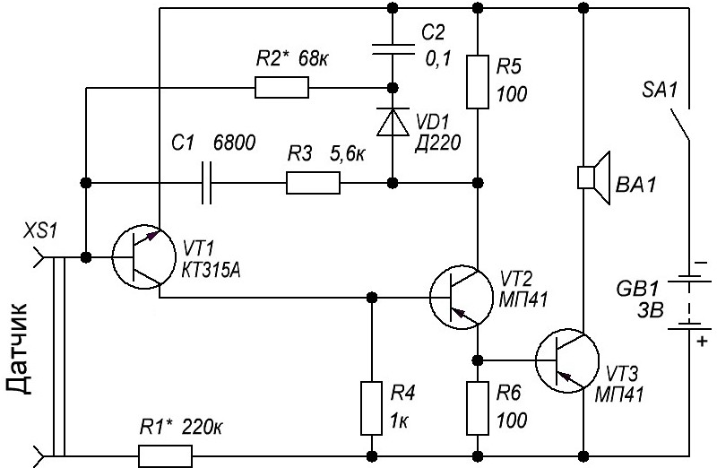

Сторожевое устройства с самоблокировкой
Самые простые датчики сигнализации срабатывают лишь в момент включения. Если срабатывание датчика было кратковременно, то сигнал тревоги можно и не заметить. Для таких случаев лучше всего использовать устройство с самоблокировкой (рис. 1). Даже при очень кратковременном срабатывании датчика устройство будет подавать звуковой сигнал вплоть до того времени, пока его не обесточат.

Рис. 1 - Схема сторожевого устройства с самоблокировкой
Таблица 1
| Обозначение | Наименование | Номинал | Примечание |
|---|---|---|---|
| BA1 | Динамик | 2 Вт / 6-10 Ом | |
| С1 | Конденсатор | 6800 пФ | |
| C2 | Конденсатор | 0,1 мкФ | |
| R1 | Резистор постоянный | 220 кОм / 0,125-0,25 Вт | |
| R2 | Резистор постоянный | 68 кОм / 0,125-0,25 Вт | |
| R3 | Резистор переменный | 5,6 кОм / 0,125-0,25 Вт | |
| R4 | Резистор постоянный | 1 кОм / 0,125-0,25 Вт | |
| R5, R6 | Резистор постоянный | 100 Ом / 0,125-0,25 Вт | |
| SA1 | Выключатель | ||
| VD1 | Диод | Д220 | 1N4108, любой кремниевый маломощный |
| VT1 | Транзистор биполярный | КТ315А | КТ312, КТ3102, 2SC1815 |
| VT2, VT3 | Транзистор биполярный | МП41 | КТ361, 2SA1015 |
На транзисторах VT1, VT2 выполнен мультивибратор, рабочая частота которого определяется конденсатором C1 (им же можно подбирать и тональность звука). Транзистор VT3 выполняет роль усилителя. Пока контакты "датчик" разомкнуты, ничего не присходит, устройство потребляет незначительный ток (не более десятков микроампер). Как только на датчике происходит замыкание на базу транзистора VT1 через резистор R1 поступит напряжение смещения, транзистор откроется и мультивибратор запустится.
В то же самое время запустится и схема самоблокировки: диод VD1 и конденсатор C2. Импульсы с коллектора VT2, выпрямленные диодом VD1 образуют на конденсаторе C2 положительное напряжение, которое через резистор R2 начнет поступать на базу транзистора VT1, создавая на нем положительное смещение и удерживая его в открытом состоянии независимо от состояния датчика.
Чтобы отключить схему (вывести из самогенерации) необходимо либо отключить питание выключателем SA1 либо замкнуть конденсатор C2 (для этой цели параллельно к нему можно припаять снопку "Сброс").
Налаживание устройства в основном сводится к подбору номинала резистора R1, таким образом чтобы обеспечить стабильное срабатывание не только при кратковременном замыкании датчика, но и при подключении к нему выносного резистора сопротивлением около 1кОм.
Источники:
radio-uchebnik.ru - Звуковая сигнализация
"Радио" №1, 1986 г, стр 51